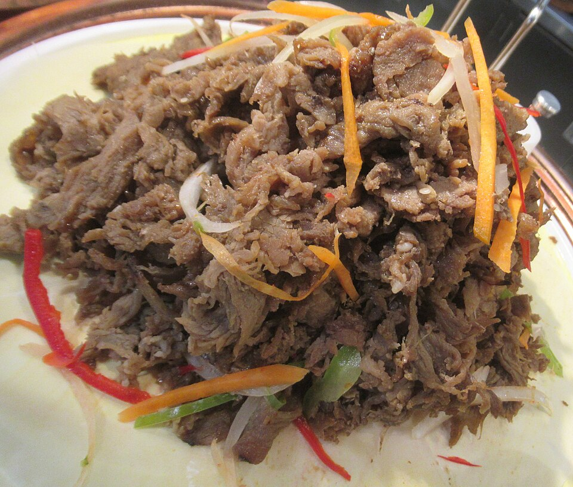

Bulgogi Beef

“Bulgogi beef texture2” is licensed under CC BY-SA 4.0. To view a copy of this license, visit Creative commons.
Description
Bulgogi beef is a popular, traditional Korean dish. It is easy to make, sweet and salty, and guaranteed to improve your day!
Ingredients
- 1 pound beef tenderloin, sliced into 1/8-inch-thick-slices
- 4 garlic cloves, minced
- 2 green onion, chopped
- 2 tablespoons soy sauce
- 2 tablespoons sugar
- 3 tablespoons water
- 1 tablespoon toasted sesame oil
- 1 tablespoon toasted sesame seeds, coarsely ground
- 1/2 teaspoon ground black pepper
- Peppers, carrots, onions, chopped to throw on top!
Steps
- Make the marinade for the beef by combining the garlic, green onion, soy sauce, sugar, water, sesame oil, sesame seeds, and ground black pepper in a large bowl. Mix well with a spoon until sugar is dissolved
- Add the sliced beef and mix everything by hand until beef is covered in marinade. Keep in fridge at least 30 minutes.
- Cook on a pan or a grill, and transfer to a plate or a cast iron plate to serve with side dishes like rice, lettuce, or anything you choose!
- Place chopped veggies on top of the beef when you are ready to eat!
Return Home